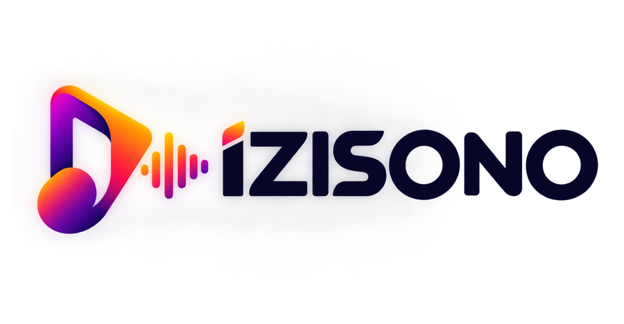

Choisis l'occasion
Anniversaire, mariage, amour, hommage…

Anniversaire, mariage, amour, hommage, fête ou simplement une idée : décris ton moment et izisono compose une chanson personnalisée.
Créer ma chanson →Anniversaire, mariage, amour, hommage…
Quelques phrases suffisent. Nous faisons le reste.
Ta chanson est générée puis prête en MP3.
Choisis le moment que tu veux célébrer.
Retrouve tes chansons et rejoue-les quand tu veux.
Des références vocales IA libres d’écoute pour montrer le rendu chanson complet. Les liens ouvrent la source originale et respectent sa licence.
Pop · sentimental · voix
Inspirant · positif · voix IA
Lo-fi pop · vocal · doux
Pop alternative · voix masculine
Inspire-toi des workflows des studios IA modernes : texte ou paroles vers chanson, voix, variantes et préparation audio dans une interface simple.
Décris ton idée et génère une chanson complète avec instrumentation et voix IA.
Colle tes paroles ou utilise l'assistant de paroles pour préparer un morceau chanté.
Féminine, masculine ou duo, avec Afrobeat, Amapiano, Zouk, Gospel, R&B et plus.
Prépare l'architecture pour les prochaines fonctions : extension, cover, layering et séparation des stems.
Écoute des démos vocales et ouvre leur référence pour découvrir d'autres créations IA libres.
Retrouve tes morceaux, écoute-les et télécharge le MP3 depuis ta bibliothèque.
2 Notes = 1 chanson personnalisée.
2 chansons personnalisées
5 chansons personnalisées
12 chansons personnalisées
Modifie le nom affiché sur ton compte.
Découvre les prochaines récompenses et offres izisono.
2 Notes = 1 chanson personnalisée. Choisis ton forfait puis continue vers le paiement sécurisé.
Sélectionne le moyen de paiement que tu souhaites utiliser pour ton forfait Izisono.
Connecte-toi avec ton email et ton mot de passe, ou utilise le lien sécurisé par email.